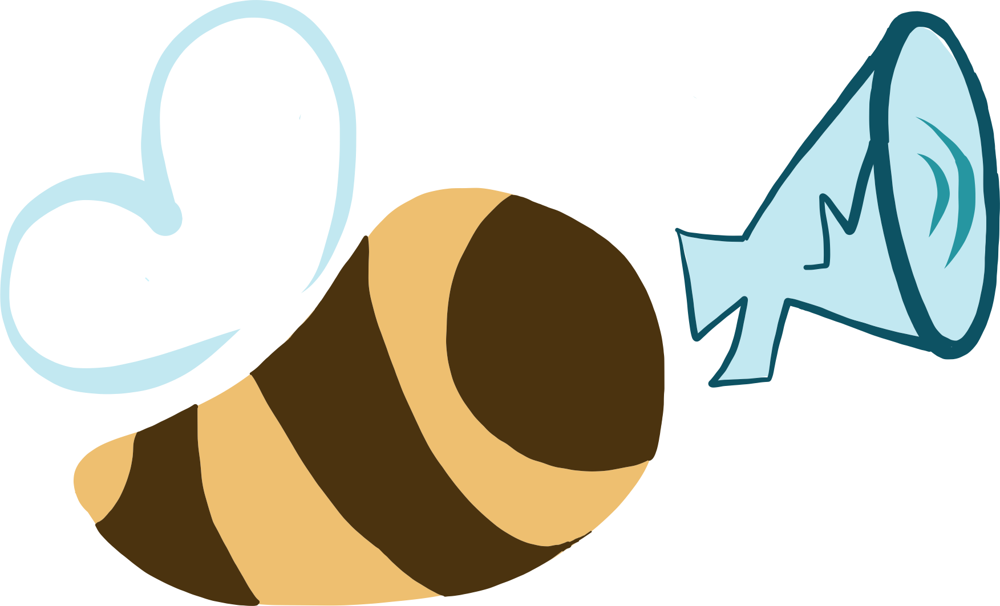
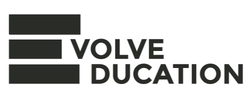
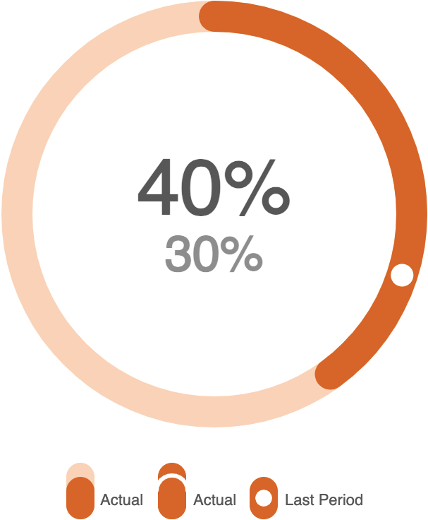

Hello! I'm Anjali

I am a Master's student in Information Science and Information Systems at Cornell Tech. Previously, I majored in Computer Science at the University of Michigan and was a member of Professor Roya Ensafi's research lab.
I enjoy interacting with people, understanding their challenges and absolutely love building things, especially those that can help make people happier in big or small ways!
In my free time I enjoy drawing, videogaming with my younger brother and listening to instrumental music. I also love tacos.
Some Projects
FeedBee
Recently, I've been subscribing to more and more newsletters. It's a great way to learn about cool new products, ideas and all kinds
of interesting things! Newsletters are meant to spark thoughts and discussion, however, it's currently a one way street. Writers share their content
but often have very little knowledge of what their readers think of it. Me and 4 of my friends want to change that! So we decided to build FeedBee to help newsletter writers get better feedback.
We wanted to make the process more direct for readers by allowing them to voice their thoughts through links in the newsletters themselves!
Their click directly records their 'vote' in our database and then sends them to a form where they can provide more personal insights. We also wanted to
present all this data to writers in an organized manner with engaging charts and dashboards.
On the team, I interview newsletter writers to understand their needs and also do some design stuff but am primarily working on developing the software. We recently launched on product hunt and got 7 customers on our free trial! :)
We have a long way to go and I am excited to work on awesome new features and improve FeedBee with my incredible team!
CSF Global Partnership
I was the project lead (along with the amazing Julia Ring) for CSF Global Partnership, a student-run project team.
Our team formed when Dr. Tasneem Karim, a researcher at an NGO, CSF Global reached out to collaborate on a project
that aims to empower children with Cerebral Palsy in Bangladesh. We conducted a needs assessment in Sirajganj, Bangladesh in Summer 2019 to better understand the day to
day challenges faced by children with Cerebral Palsy and their caregivers. We met with Bangladeshi nutrition
experts such as Dr. Khurshid Talukder and Moushumi Khan, who is a UofM alumna and runs the NGO Foundation for Charitable
Activities in Bangladesh (FCAB), before and during our needs assessment trip to gain more insights into the challenges and how we can make our future intervention effective.
Several families mentioned difficulty feeding their child and that their child was unable to feed themselves.
We also observed mothers feeding their children during therapy sessions, instead of the child working to feed
themselves. Children with Cerebral palsy also have a higher incidence of malnutrition because they have difficulty
chewing and swallowing.
This is why our team decided to focus on alleviating the childrens’ feeding and nutritional problems. The education subteam is working to create an information booklet that allows caregivers to easily access posture tips,
ways to modify the texture of food and recipes for affordable food that is best suited for children
who have Cerebral palsy. Whereas the assistive device subteam is working to create an assistive plate and glove
that makes it easier for children with Cerebral palsy to feed independently.
The Spirelephant
My teammates and I created the Spirelephant as part of EECS 495: Software for Access. After surgery, the alveoli
in the lungs of patients close up, which is why doctors recommend that they do breathing exercises using a device
called a spirometer. But patients often do not do these exercises because it feels too monotonous and doctors do not
have any way of checking up on them. This problem is worse for young children who may get bored easily. Enter: the Spirelephant!
It uses the patients' breaths as input to the game to control the on screen character Elly the elephant who completes various
tasks to help out her animal friends. I had a lot of fun creating the art for the game!



Internship
This past summer, I interned at Evolve Education. I worked with my team to design and implement a system for school children to help them with goal-setting, forming positive habits,
and improving their well-being and cognitive health (especially during the pandemic).
It was an incredible to learn just how much thinking needs to go into making a system for real people - understanding their needs and brainstorming the
best ways to tackle them was very enjoyable. I was able to dabble in design using Figma, and also did some research into gamification but I primarly worked
on software development using Laravel (a PHP framework). I implemented functions to make custom charts using p5.js to represent data in a more fun and easy to parse way and also used Chart.js to create
interactive charts. Finally, I also implemented a calendar and todo list system!


Research
COVID-19 Censorship Research
Censored Planet is one of the projects led by Professor Roya Ensafi which focuses on
remotely measuring and analyzing Internet censorship on different layers by using, developing and refining tools such
as Satellite and Hyper Quack.
During the pandemic, there has been a significant increase in the spread of misinformation which can be especially harmful
given how peoples' misguided views on how to curb the spread of the illness or whether it actually exists could lead them to behave in
ways that directly harm others. This has given a reason to authorities for increasing Internet and media censorship.
I was part of a team which analyzed Internet censorship specific to the COVID-19 pandemic using the tools Satellite (measures DNS layer censorship)
and Quack (measures application layer censorship).
Thanks to the hard work of my awesome team, we were able to compile our findings into a paper which was accepted to the 2021 Financial Cryptography and Data Security Conference.
Virtual Private Network (VPN) Research
I was part of the VPNalyzer project also led by Professor Ensafi, which aims to grow transparency and trust in the VPN ecosystem. I tested the desktop app (VPNalyzer) empowering users to analyze the performance of their VPNs themselves. I also developed and
pretested a user survey taken by over 1000 VPN users to understand their needs and challenges while working with Consumer Reports.


Teaching
EECS 376
I taught EECS 376: Foundations of Computer Science as an Instructional Aide in:
- Winter 2020 with Prof. Amir Kamil and Ilya Volkovich
- Spring 2020 with Prof. Mark Brehob
- Fall 2020 again with Prof. Kamil and Volkovich
EECS 376 is an introduction to theory of computation.
Course topics include algorithmic design paradigms and analysis, Turing machines, polynomial time computability,
computational complexity with an emphasis on NP-hardness, coping with intractability, randomness in computation, and cryptography.

Random
Instrumental Music
I love listening to instrumental music and movie soundtracks because they help me focus and feel relaxed. Here's a Spotify study playlist I made for EECS 376 students during finals week! :) I keep adding to it now and then. My personal favorites are Arrival of the Birds by the Cinematic Orchestra and the whole soundtrack of the film Interstellar.My favorite motivational stuff
- The spoken word poem "Point B" by Sarah Kay (she presented it at a TED talk too!)
- The short film "One Small Step" by Taiko Studios
- "The Letter M" a short film made by U of M graduates
- An animated short by Chescaleigh and Kat Blaque "Sometimes you're a caterpillar"